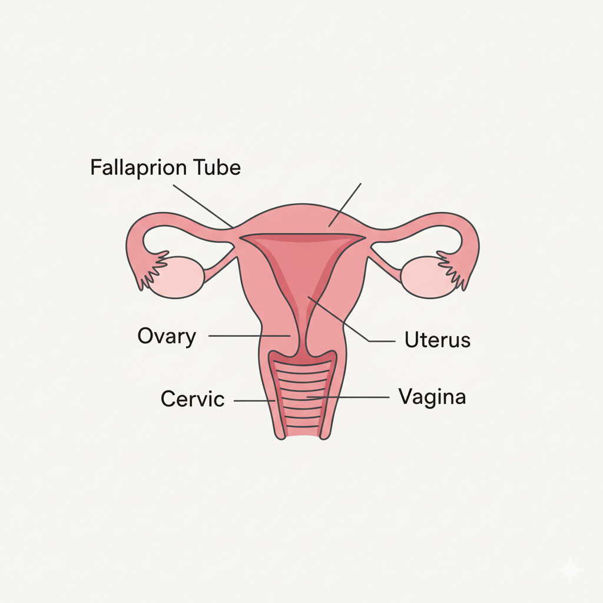
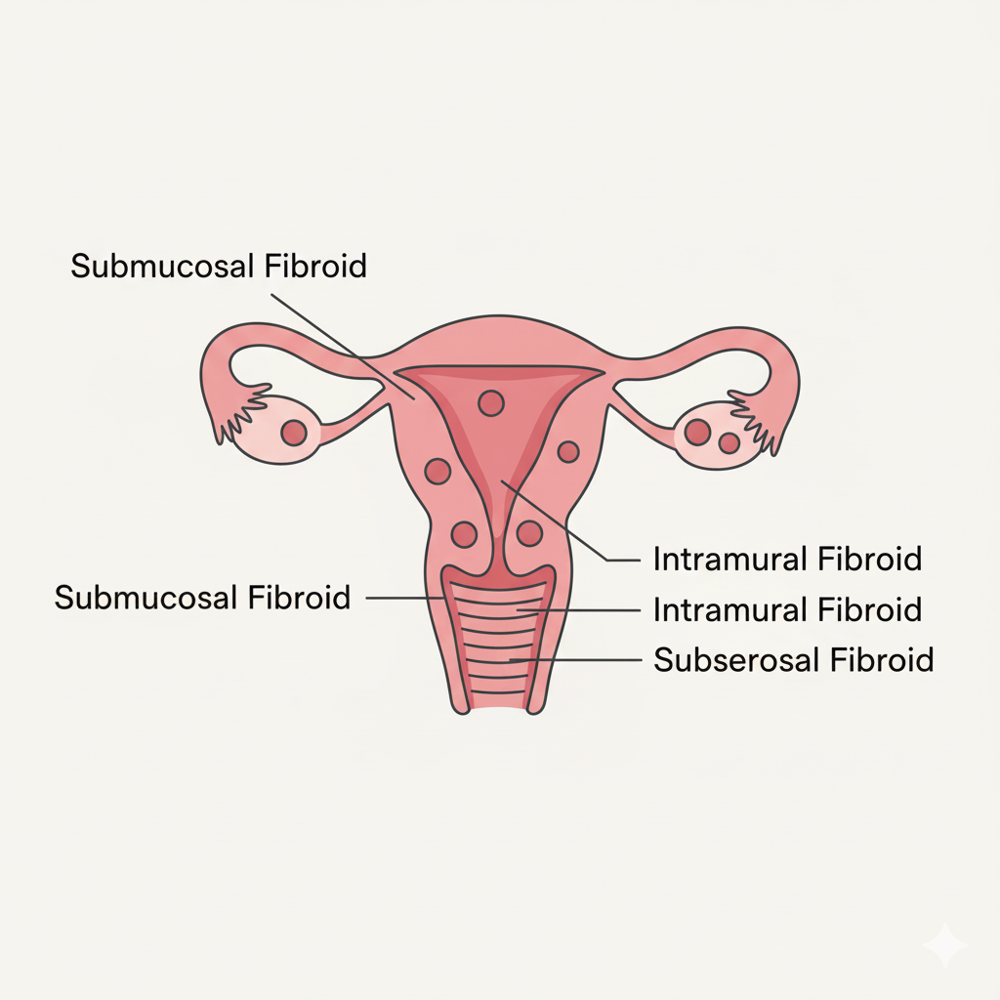

Fibroid Awareness: Why I Started This Blog and The Silence We Need to Break
The Introduction
Welcome! I'm Princess Mac, and this blog is born from a simple yet urgent mission: to turn personal health struggles into shared knowledge and empowerment through tech advocacy. The catalyst for this journey, and the topic of my first post, is Uterine Fibroids. Fibroids affect millions of women globally, yet the conversation around them remains stuck in the shadows of misinformation and dismissive care. For too long, the debilitating symptoms—from heavy bleeding to chronic pain—have been normalized. I started this blog not just to talk about fibroids, but to use my skills as a problem-solver and tech enthusiast to challenge the status quo, advocating for clearer diagnostics, better treatment options, and most importantly, a community free from silence.
In-Depth Content and Analysis
The intersection of fibroids and technology is where innovation can make the greatest impact. But first, let’s make sure everyone understands the basics! The uterus is a powerful organ that sits in the lower part of a woman's body. **Fibroids** are just like little balls of muscle that can grow inside or on the wall of the uterus.

These fibroid "balls" have different names depending on where they are located. It’s important to see where they are because that often affects how they make a woman feel.

The diagnostic process often relies on subjective patient reporting and general imaging, leading to significant delays. This is an area where **Health Tech (HealthTech)** can revolutionize patient empowerment. Imagine an app that allows women to precisely track symptom severity and frequency, providing physicians with objective data far superior to vague diary entries.
The intersection of fibroids and technology is where innovation can make the greatest impact. While treatment has advanced, access to timely and accurate information hasn't kept pace. The diagnostic process often relies on subjective patient reporting and general imaging, leading to significant delays. This is an area where Health Tech (HealthTech) can revolutionize patient empowerment. Imagine an app that allows women to precisely track symptom severity and frequency, providing physicians with objective data far superior to vague diary entries.
Furthermore, fibroid care needs to move beyond a "one-size-fits-all" approach. Treatment is complex, ranging from medication to minimally invasive procedures like Uterine Fibroid Embolization (UFE), all the way to hysterectomy. Patients are often overwhelmed. The lack of centralized, unbiased, and easy-to-digest information about all available options is a major gap. My focus here will be advocating for **digital tools that simplify this decision-making process** by presenting options with clear success rates, recovery times, and associated risks.
Three Pillars of Fibroid Advocacy I'll Address with Tech:
- **The Data-Driven Dialogue:** Utilizing simple mobile tracking tools to collect objective data on bleeding, pain, and quality of life, transforming subjective complaints into powerful evidence for clinicians.
- **Unbiased Resource Mapping:** Creating a centralized, easy-to-navigate digital repository that maps all surgical and non-surgical treatment centers, complete with verified patient testimonials and accredited specialist credentials.
- **Community and Validation:** Developing platforms that break the isolation, offering secure, moderated spaces where women can share stories and validated information without fear of judgment. The collective voice is the most powerful tool for change.
Conclusion and Next Steps
Starting this blog with fibroid awareness is my commitment to this community. My own journey has taught me that the empathy we seek from the medical system often begins with the empathy we give ourselves and each other. By demanding better data tools and clearer access to comprehensive care information, we are not just solving a health problem; we are solving an information problem. Join me as we explore how technology can finally bring clarity, validation, and empowerment to millions who have waited far too long.
Call to Action: If you have been affected by fibroids, what is the single biggest piece of information you wish you had known sooner? Share your experience in the comments or anonymously contact me.